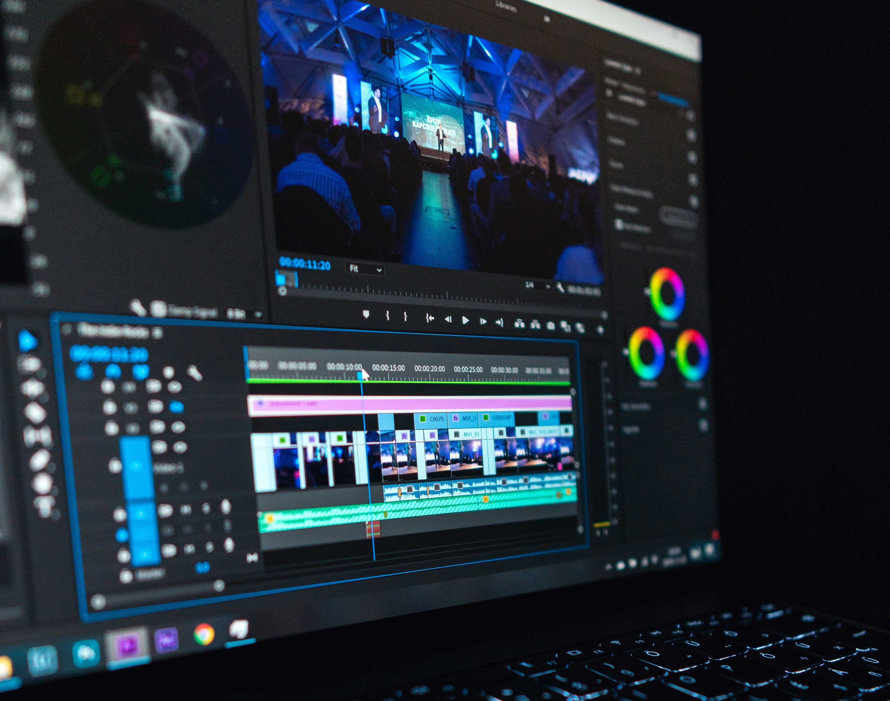

“DoLearn DoLearn = 하면서 배운다"
디지털미디어콘텐츠는 디지털 장치를 기반으로 디자인, 스토리텔링 등 신세대 콘텐츠 개발을 위한 능력을 성장시킵니다.
과거 책과 만화, 예술적인 그림과 음악이 이제는 모두 디지털 메체로 구현하는 시대가 왔습니다.
디지털미디어콘텐츠를 통해 우리는 미래 문화를 새롭게 만들어갈 수 있습니다.
미디어콘텐츠 개발 중심에 설 새로운 인재가 되기 위해, 디지털미디어콘텐츠를 시작해 보세요!